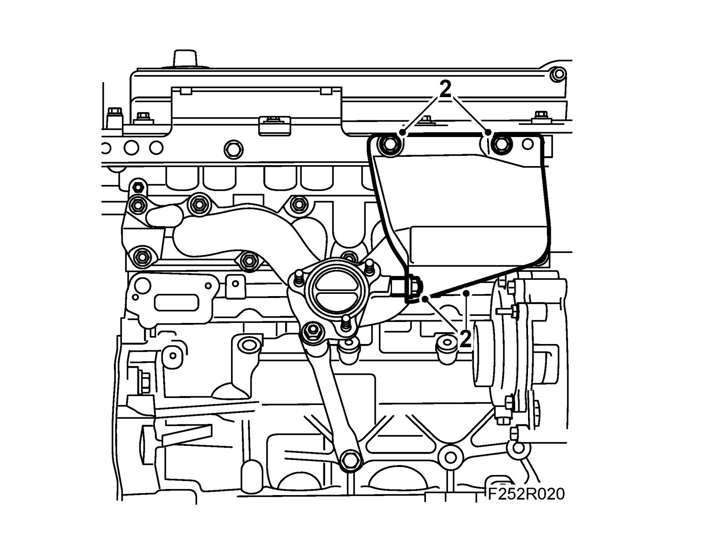
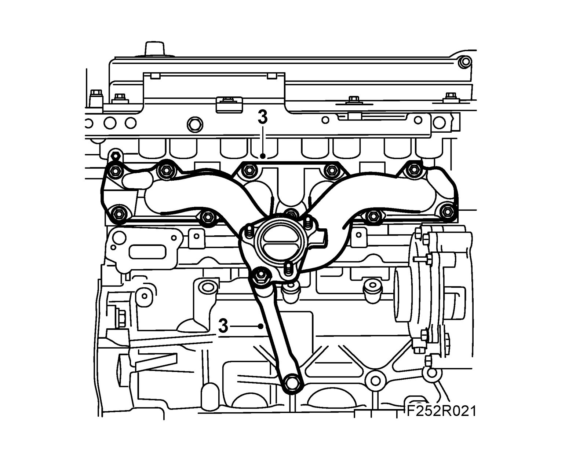

Exhaust Manifold: Service and Repair
Exhaust manifoldTo remove
1. Remove the Turbocharger
2. Remove the heat shield.

3. Remove the exhaust manifold and the stay.

To fit
1. Clean the contact surfaces from gasket residue and soot.
2. Fit new gaskets.
3. Fit the exhaust manifold with new nuts
Tightening torque, Step 1 : 25 Nm (18 lbf ft), Step II : 32 Nm (23 lbf ft)
4. Fit the exhaust manifold stay.
Tightening torque 48 Nm (35 lbf ft)
5. Fit the heat shield.
Tightening torque 22 Nm (16 lbf ft)
6. Fit the Turbocharger.